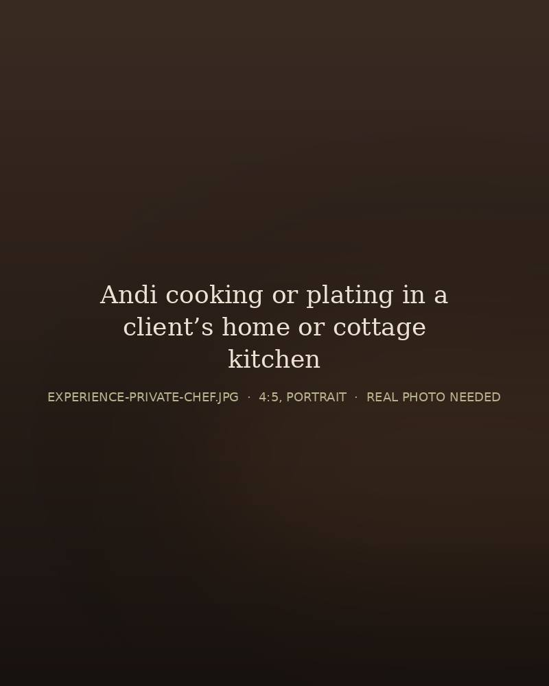

Private chef experience
Have everyone over and let me handle dinner
Hosting is even better when you get to enjoy the evening yourself. I’ll prepare a custom menu then come to your home or cottage and prepare a meal for you and your guests.
- Where
- Your home or cottage
- Menu
- Custom, built around your tastes and dietary requirements
- Good for
- Family celebrations, birthdays, weekends with friends